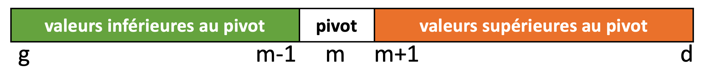

Rechercher
Contenu
3. Rechercher¶
Mis à jour : Apr 03, 2022, lecture : 16 minutes minimum, PhL.
# pour python<3.9
#from typing import list
3.1. Objectif du chapitre¶
Ce chapitre présente des versions de deux algorithmes (déjà connus) pour rechercher si une valeur est présente ou non dans un ensemble de valeurs. Cet ensemble de valeurs est stocké dans un tableau (1D ou nD selon le type de valeurs).
Au delà de la question de la recherche de valeur dans un ensemble, l’objectif est ici de construire des versions itératives et récursives d’un même algorithme.
L’analyse de la complexité de ces traitements sera aussi réalisée ainsi (\(\star\)) qu’une illustration de preuve de terminaison et de correction de ces traitements.
Les algorithmes concernés sont :
la recherche séquentielle
la recherche dichotomique – lorsque les valeurs sont préalablement triées.
3.2. Recherche séquentielle¶
3.2.1. Principes¶
Objectif
Rechercher si une valeur apparait dans un tableau de valeurs
Répondre vrai si la valeur est dans le tableau, faux sinon
Hypothèse de départ
Il existe une relation de comparaison entre deux valeurs : égalité.
- on la note ==
Aucune hypothèse sur les valeurs
Principe de la recherche séquentielle
Parcourir séquentiellement le tableau de valeurs et comparer à la valeur cherchée.
séquentiellement : “valeur après valeur” selon un ordre simple induit par les indices des valeurs dans le t
exemple : du début à la fin du tableau donc pour un ordre croissant des indices
parcours complet : de 0 à
len(t)-1parcours optimal : arrêt du parcours dès la valeur trouvée
Exemple pour la suite.
Un tableau de 10 entiers aléatoirement compris entre 0 et 10 va illustrer notre propos.
from random import randint, seed
n = 10
t = [0 for i in range(n)]
seed(2)
for i in range(n):
t[i] = randint(0, n)
print(t)
[0, 1, 1, 5, 2, 10, 4, 4, 9, 3]
En-tête “modèle” de la fonction¶
def rech_seq(val: int, tab: list[int], dim: int) -> bool:
entrées :
val : la valeur à chercher – ici un
inttab : le tableau 1D qui contient les valeurs – ici un tableau 1D représenté par une liste python
dim :
len(tab)le nombre de valeurs
sortie :
booléen : True ou False
Cet en-tête de fonction fixe certaines caractéristiques des paramètres du problème. En effet, la recherche s’effectue ici dans un ensemble représenté par un tableau et la valeur cherchée est un entier. Ces paramètres ensemble et valeur pourraient être différents : par exemple la recherche peut s’effectuer dans une liste de nombres flottants, une chaîne de caractères, un dictionnaire … Il faudrait alors modifier l’en-tête pour ces types de données.
Cet en-tête est donc un modèle d’en-tête pour une fonction de recherche. On peut voir le type des valeurs et la structure de stockage comme des paramètres de plus haut niveau d’abstraction de ce traitement. Ceci correspond à la notion de généricité ou de certaines formes de la notion d’héritage dans les langages (dits) objet.
3.2.2. Algorithmes itératifs¶
Parcours complet¶
Principe du parcours séquentiel “naif”:
On parcourt toutes les valeurs
tab[i]pouri = 0,.., dim-1on compare à la valeur cherchée
valon met à jour une variable booléenne
trouvequi marque la présence ou non devaldanstabA la fin du parcours,
trouveindique sivala été trouvée ou nondonc on initialise
trouveàFalseavant de commencer le parcours
def rech_seq_for(val: int, tab: list[int], dim: int) -> bool:
trouve = False
for i in range(dim):
if tab[i] == val:
trouve = True
return trouve
Application :
v = 1
print(v, "dans ", t, "?", rech_seq_for(v, t, len(t)))
v = 3
print(v, "dans ", t, "?", rech_seq_for(v, t, len(t)))
v = 7
print(v, "dans ", t, "?", rech_seq_for(v, t, len(t)))
1 dans [0, 1, 1, 5, 2, 10, 4, 4, 9, 3] ? True
3 dans [0, 1, 1, 5, 2, 10, 4, 4, 9, 3] ? True
7 dans [0, 1, 1, 5, 2, 10, 4, 4, 9, 3] ? False
Commentaires.
Le parcours complet du tableau est d’autant plus inefficace que le nombre de valeurs inutilement parcourues est important : valeur cherchée trouvée tôt dans ce parcours et/ou taille du tableau élevée.
D’un point de vue de complexité, on identifie un meilleur cas (valeur présente tôt) qui n’est pas traité différemment d’un pire cas (valeur absente).
C’est une faiblesse de cette première solution.
Parcours minimal¶
Même principe excepté :
la mise à jour de
trouvepermet d’arrêter le parcours dès quevala été trouvée
Voilà une première version qui découle de la construction avec for.
def rech_seq_while_v0(val: int, tab: list[int], dim: int) -> bool:
trouve = False
i = 0
while i < dim and trouve == False:
if tab[i] == val:
trouve = True
i = i + 1
return trouve
Application :
v = 1
print(v, "dans ", t, "?", rech_seq_while_v0(v, t, len(t)))
v = 3
print(v, "dans ", t, "?", rech_seq_while_v0(v, t, len(t)))
v = 7
print(v, "dans ", t, "?", rech_seq_while_v0(v, t, len(t)))
1 dans [0, 1, 1, 5, 2, 10, 4, 4, 9, 3] ? True
3 dans [0, 1, 1, 5, 2, 10, 4, 4, 9, 3] ? True
7 dans [0, 1, 1, 5, 2, 10, 4, 4, 9, 3] ? False
La variable trouve n’est pas nécessaire comme l’illustre la version plus simple suivante.
def rech_seq_while(val: int, tab: list[int], dim: int) -> bool:
i = 0
while i < dim:
if tab[i] == val:
return True
i = i + 1
return False
v = 1
print(v, "dans ", t, "?", rech_seq_while(v, t, len(t)))
v = 3
print(v, "dans ", t, "?", rech_seq_while(v, t, len(t)))
v = 7
print(v, "dans ", t, "?", rech_seq_while(v, t, len(t)))
1 dans [0, 1, 1, 5, 2, 10, 4, 4, 9, 3] ? True
3 dans [0, 1, 1, 5, 2, 10, 4, 4, 9, 3] ? True
7 dans [0, 1, 1, 5, 2, 10, 4, 4, 9, 3] ? False
Autre écriture de la condition du while où il faut être prudent :
Attention à l’ordre des tests dans la condition de la ligne 4
def autre_rech_seq_while(val, tab, dim):
i = 0
# ordre incorrect qui va déclancher IndexError
# while (tab[i] != val) and (i < dim):
#
# ordre correct où la validité de l'indice est vérifiée avant de l'utiliser
while (i < dim) and (tab[i] != val):
i = i + 1
if i < dim:
return True
else:
return False
print(t)
v = 1
print(v, "dans ", t, "?", autre_rech_seq_while(v, t, len(t)))
v = 3
print(v, "dans ", t, "?", autre_rech_seq_while(v, t, len(t)))
v = 7
print(v, "dans ", t, "?", autre_rech_seq_while(v, t, len(t)))
[0, 1, 1, 5, 2, 10, 4, 4, 9, 3]
1 dans [0, 1, 1, 5, 2, 10, 4, 4, 9, 3] ? True
3 dans [0, 1, 1, 5, 2, 10, 4, 4, 9, 3] ? True
7 dans [0, 1, 1, 5, 2, 10, 4, 4, 9, 3] ? False
Ecriture équivalente avec une boucle for
La construction suivante permet le même traitement minimal au sein d’une boucle for
def rech_seq_for_ecourtee(val: int, tab: list[int], dim: int) -> bool:
trouve = False
for i in range(dim):
if tab[i] == val:
return True
return trouve
print(t)
v = 1
print(v, "dans ", t, "?", rech_seq_for_ecourtee(v, t, len(t)))
v = 3
print(v, "dans ", t, "?", rech_seq_for_ecourtee(v, t, len(t)))
v = 7
print(v, "dans ", t, "?", rech_seq_for_ecourtee(v, t, len(t)))
[0, 1, 1, 5, 2, 10, 4, 4, 9, 3]
1 dans [0, 1, 1, 5, 2, 10, 4, 4, 9, 3] ? True
3 dans [0, 1, 1, 5, 2, 10, 4, 4, 9, 3] ? True
7 dans [0, 1, 1, 5, 2, 10, 4, 4, 9, 3] ? False
Cas du tableau vide¶
Ce cas extrême mérite souvent une attention particulière.
Les versions avec la boucle
foravec la bornelen(t)s’adaptent “automatiquement” à ce cas grâce à la fonctionrange()– et retournentFalse.En revanche, les écritures avec
whilene sont pas satisfaisantes en l’état :la condition d’arrêt
i < dimn’est jamais satisfaite sidim == 0.un traitement spécifique du tableau vide est toujours possible
On verra que l’analyse de la correction de cet algorithme donne une autre solution.
def rech_seq_while_2(val: int, tab: list[int], dim: int) -> bool:
'''traite le cas du tableau vide'''
assert dim == len(tab)
# cas du tableau vide
if dim == 0:
return False
# autres cas
i = 0
while i < dim:
if tab[i] == val:
return True
i = i + 1
return False
v = 1
t_vide = []
print(v, "dans ", t_vide , "?", rech_seq_while_2(v, t_vide, len(t_vide)))
1 dans [] ? False
3.2.3. Algorithme récursif¶
Principe
Récursion : Rechercher
valdanstabde0àdim-1, c’est :regarder si
valest en première position du tableautab, cad. entab[0],si c’est le cas, on a trouvé et on peut répondre : terminaison
si ce n’est pas le cas, on recommence récursivement en 1. avec la partie restante de
tab, cad. le sous-tableau “à droite” de la première position.
Syntaxe plus générale pour un traitement récursif :
On va introduireg(pour gauche) etd(pour droite) pour désigner le premier et le dernier+1 indice detab, cad.tab[g, d[
On reprend la description précédente :Récursion : Rechercher
valdanstabdegàdexclus, c’est :
regarder si
valest en première position du tableautab, c-a-d. entab[g],si c’est le cas, on a trouvé et on peut répondre : : terminaison
si ce n’est pas le cas, on recommence récursivement (en 1.) avec le sous-tableau “à droite” de la première position, cad.
tab[g+1, d[.
Terminaison : 2 cas
on a trouvé : item 2.
si
tabest vide, c-a-d. sig >= dim: on n’a pas trouvé
Initialisation :
g = 0etd = dimoulen(tab)en python
Mise en oeuvre
On traite les terminaisons (
returndes lignes 4 et 6) avant l’appel récursif (avec lereturnde la ligne 8)L’initialisation correspond à l’appel récursif principal qui “passe” le problème à résoudre à l’algorithme de résolution.
remarquons ici qu’on définit une fonction dont l’en-tête est similaire à celle des versions itératives : 3 paramètres (la valeur, le nom du tableau et sa taille)
cette fonction encapsule l’appel principal à la fonction récursive
def rech_seq_rec_gd(val: int, tab: list[int], g: int, d:int) -> bool:
'''recherche val dans tab[g,d['''
if g == d:
return False
if t[g] == val:
return True
else:
return rech_seq_rec_gd(val, tab, g+1, d)
def rech_seq_rec(val: int, tab: list[int], dim: int) -> bool:
return rech_seq_rec_gd(val, tab, 0, len(tab))
v = 1
print(v, "dans ", t, "?", rech_seq_rec(v, t, len(t)))
v = 3
print(v, "dans ", t, "?", rech_seq_rec(v, t, len(t)))
v = 7
print(v, "dans ", t, "?", rech_seq_rec(v, t, len(t)))
1 dans [0, 1, 1, 5, 2, 10, 4, 4, 9, 3] ? True
3 dans [0, 1, 1, 5, 2, 10, 4, 4, 9, 3] ? True
7 dans [0, 1, 1, 5, 2, 10, 4, 4, 9, 3] ? False
Remarques :
Quelle version de recherche séquentielle (parcours complet vs. minimal) correspond à l’écriture récursive ici proposée ?
Ecrire l’autre version de façon récursive.
3.3. Recherche dichotomique dans un tableau trié¶
Dans le cas où les valeurs sont triées, on peut introduire un traitement plus efficace.
Ce traitement, par dichotomie, peut s’écrire de façon itérative ou récursive.
On va ainsi illustrer l’application du principe diviser pour régner.
3.3.1. Principes¶
Objectif
Rechercher si une valeur apparait dans un tableau de valeurs triées
Répondre vrai si la valeur est dans le tableau, faux sinon
Hypothèse de départ
Les valeurs sont rangées de façon triée (on ne le dira jamais assez !)
par ordre croissant par exemple
Trions t pour continuer selon ces hypothèses.
# En attendant le chapitre suivant, utilisosn les fonctions prédéfinies de python
t.sort()
print(t)
[0, 1, 1, 2, 3, 4, 4, 5, 9, 10]
Principe
Un algorithme diviser pour régner où chaque division réduit la recherche à un ensemble de taille moitié, l’autre ensemble n’étant plus considéré
diviser :
on partage en 2 par la moitié le tableau trié
régner :
on compare la valeur cherchée à la valeur médiane du tableau
si besoin, on en déduit la moitié gauche ou droite du tableau qui contient la valeur cherchée
on recommence la recherche sur la “bonne moitié”
3.3.2. Algorithme itératif¶
Analyse
Il faut :
itérer :
le test de la valeur de l’indice milieu
le découpage en 2 du tableau
arrêter :
quand on a trouvé la valeur cherchée
ou si la taille du tableau est égale à zéro (tableau vide)
retourner un booléen
Codage
L’appel s’effectue en indiquant :
la valeur cherchée
le tableau
sa taille
Le nombre d’itérations n’est a priori pas connu (il est borné en revanche) donc boucle
whileL’indice milieu est obtenu avec une division entière
//sachant que le milieu entre \(a\) et \(b\) est \((a+b)//2\)Rappel : la division entière
//retourne le quotient de la division euclidienne
D’une itération à l’autre :
choisir la partie gauche ou droite du tableau revient à changer l’indice de début et de fin du prochain tableau à traiter : on introduit des indices
g,detmpour désigner les indices de gauche, de droite et du milieula taille est divisée par 2
def dichotomie_iterative(val, t, dim_t):
'''recherche dichotomique : version itérative
entrées - val :int cherché
- t : tableau d'int de taille dim_t, trié par ordre croissant
sortie : vrai si val est dans t, faux sinon
'''
g = 0 # indice de gauche du tableau exploré
d = dim_t - 1 # indice de droite du tableau exploré
while g <= d:
m = (g + d)//2 # indice milieu de t[g,d]
if t[m] == val:
return True
elif t[m] > val: # val est dans la partie gauche : t[g,m-1]
d = m - 1
else: # val est dans la partie droite : t[m+1,d]
g = m + 1
return False
v = 1
print(v, "dans ", t, "?", dichotomie_iterative(v, t, len(t)))
v = 3
print(v, "dans ", t, "?", dichotomie_iterative(v, t, len(t)))
v = 7
print(v, "dans ", t, "?", dichotomie_iterative(v, t, len(t)))
1 dans [0, 1, 1, 2, 3, 4, 4, 5, 9, 10] ? True
3 dans [0, 1, 1, 2, 3, 4, 4, 5, 9, 10] ? True
7 dans [0, 1, 1, 2, 3, 4, 4, 5, 9, 10] ? False
3.3.3. Algorithme récursif¶
Analyse
Récursion
il faut appeler récursivement la recherche sur le **sous-**tableau (gauche ou droite) qui va bien
Terminaison : 2 cas
on a trouvé la valeur cherchée
le tableau est vide
Codage
Récursion : “le sous-tableau (gauche ou droite) qui va bien”
il faut pouvoir préciser les indices gauche et droit du sous-tableau traité
donc paramètres formels :
getd
et sa taille (parce qu’on manipule un tableau)
donc paramètre formel
n
Rmq.: A la place de n, on pourrait déduire la taille effective du tableau traité à partir de get d. Mais on convenu d’ajouter systématiquement la taille d’un tableau passé en argument d’un sous-programme.
def dichotomie(val: int, t: list[int], dim_t: int, g: int, d: int) -> bool:
'''recherche dichotomique : version récursive
recherche val dans t[g, d] et retourne True ou False
entrées. val : int, t: tableau d'int de taille n,
g, d : int indices gauche et droite
'''
if g > d:
return False # t est vide
m = (g + d) // 2
if t[m] == val:
return True
elif val < t[m]: # val est dans la partie gauche
dim_t = (m-1) - g + 1
return dichotomie(val, t, dim_t, g, m-1)
else: # val est dans la partie droite
dim_t = d - m
return dichotomie(val, t, dim_t, m+1, d)
def dichotomie_recursive(val: int, t: list[int], dim_t: int) -> 0:
'''recherche dichotomique de val dans t de taille dim_t
pour ressembler ) la version iterative en utilisant dichotomie
'''
return dichotomie(val, t, dim_t, 0, dim_t-1)
v = 1
print(v, "dans ", t, "?", dichotomie_recursive(v, t, len(t)))
v = 3
print(v, "dans ", t, "?", dichotomie_recursive(v, t, len(t)))
v = 7
print(v, "dans ", t, "?", dichotomie_recursive(v, t, len(t)))
1 dans [0, 1, 1, 2, 3, 4, 4, 5, 9, 10] ? True
3 dans [0, 1, 1, 2, 3, 4, 4, 5, 9, 10] ? True
7 dans [0, 1, 1, 2, 3, 4, 4, 5, 9, 10] ? False
Remarque
Observer et bien comprendre pourquoi le traitement récursif
dichotomiecomporte 4returnEssayer par exemple de supprimer les 2 derniers
L’encapsulation de
dichotomiedansdichotomie_recursivepermet un appel de plus haut niveau similaire à la version itérative. Dans l’absolu, il n’est pas nécessaire : c’est l’appel principal dedichotomiequi résout le problème..
Exercices
Instrumenter le code (ajouter des
print():) pour exhiber l’évalution deg,detmEffectuer les 2 recherches précédentes sans utiliser
dichotomie_recursivemais seulementdichotomie
3.4. Complexité des algorithmes de recherche¶
Nous allons montrer que la recherche séquentielle est un algorithme de complexité linéaire tandis que la recherche dichotomique est de complexité logarithmique. Ce qui justifie l’intérêt l’approche dichotomique pour des tableaux triés de grande taille.
3.4.1. Les paramètres de l’analyse de la complexité¶
Paramètre de complexité : le nombre de valeurs présentes, c-a-d. la taille dim du tableau de stockage.
Notons \(n\) ce paramètre et t ce tableau.
Mesure de la complexité : la comparaison t[i] == val dans le cas séquentiel itératif, ou t[g] == val dans le cas séquentiel récursif ou enfin t[m] == val dans le cas dichotomique.
On va donc chercher la quantité \(C(n)\) qui compte le nombre de ces comparaisons comme une fonction de la taille \(n\) du tableau de stockage.
3.4.2. Analyse de la recherche séquentielle itérative¶
Le nombre de comparaisons dépend de la position de val dans t :
meilleur cas :
valest présent à l’indice 0 et 1 comparaison suffitpire cas :
valest absent detdonc le parcours du tableau est complet (quelque soit l’écriture) et comporte \(n\) comparaisonsdans le cas général : traitement effectué avec un nombre de comparaisons inférieur ou égal à \(n\)
Donc \(C(n) \le n\).
La complexité en temps de la recherche séquentielle dans un tableau de \(n\) valeurs est au pire linéaire en \(n\).
Sa complexité asymptotique est telle que : \(C(n) = \cal{O}(n)\).
3.4.3. Analyse de la recherche dichotomique, version itérative¶
La dichotomie effectue des divisions successives de la taille du tableau dans laquelle la recherche est effectuée. Il est commode de commencer l’analyse avec \(n = 2^p\) pour obtenir des tailles successives entières.
Remarquons dès maintenant :
si \(n = 2^p\) alors \(p = \log_2(n)\)
si \(2^p \le n < 2^{p+1}\) alors \(p =\)
int(\(\log_2(n)\)).
Cette dernière ligne explicite l’intérêt de commencer avec \(n = 2^p\).
Principe de l’analyse.
Le nombre de comparaisons dépend de la position de val dans t :
Meilleur cas : val est présent à l’indice m == n//2 et 1 comparaison suffit
Pire cas : val est absent de t
la recherche s’effectue successivement sur des tableaux de taille \(n, n/2, n/4, \dots, 4, 2, 1\) jusqu’à terminaison avec
g == d, c-a-d. un tableau vide, soit donc \(p = \log_2(n)\) divisions par 2 avant terminaisonpour chacune de ces tailles, une comparaison
t[m] == valest effectuée
Donc \(C(n) = p = \log_2(n)\) dans le pire des cas pour \(n = 2^p\).
Et pour le pire cas d’une taille \(n\) quelconque, int\((\log_2(n)) \le C(n) <\) int\((\log_2(n))+1\).
La complexité en temps de la recherche séquentielle dans un tableau de \(n\) valeurs est au pire majorée par le logarithme de \(n\).
Sa complexité asymptotique est telle que : \(C(n) = \cal{O}(\log(n))\).
Rmq. Les valeurs successives de la taille des tableaux traités sont celles de la suite géométrique de raison \(1/2\) et de premier terme \(n\). Une telle suite converge vers 0. Ce qui permettra de prouver la terminaison de l’algorithme.
Exercice.
La complexité logarithmique de la recherche dichotomique en version itérative peut aussi se démontrer en prouvant (par récurrence) que la taille de l’intervalle après \(k\) itération de \([g, d[\), \(|d - g| < n / 2^k\).
3.4.4. Analyse de la recherche dichotomique, version récursive¶
On retrouve facilement la complexité logarithmique de la recherche dichotomique dans sa version récursive.
On simplifie l’analyse en observant un pire cas et \(n = 2^p\).
Soit \(C(n)\) le nombre de comparaisons effectuées par la recherche dichotomique dans \(n\) valeurs.
Une étape de récursion de cette recherche :
effectue une comparaison :
t[m] == val“appelle” la récursion pour \(n/2\).
La terminaison est obtenue dans le pire cas pour \(C(1) = 1\) (ou \(C(0) = 0\)).
Soit donc, directement : \(C(n) = 1 + C(n/2)\) et \(C(1) = 1\).
On développe cette relation de récurrence pour \(n, n/2, ..., 1\).
Ce qui donne : \(C(n) = 1 + 1 + \dots + 1 = \log_2(n)\).
On remarque que l’analyse de la version récursive conduit naturellement à une relation de récurrence.
Exercice.
De façon similaire, retrouver la complexité linéaire de la recherche séquentielle en version récursive.
3.5. (\(\star\)) Preuves de terminaison et de correction¶
Nous illustrons comment prouver :
qu’un algorithme termine
qu’un algorithme est correct, c-a-d. qu’il termine en trouvant bien la solution du problème.
3.5.1. Terminaison de la recherche séquentielle : version itérative¶
Il s’agit de montrer que l’exécution de l’algorithme termine son exécution quelques soient les entrées de l’instance. Dans un premier temps, on ne s’intéresse pas à la validité de la solution ainsi trouvée.
Dans le cas d’un algorithme itératif, une technique classique pour prouver la terminaison de l’algorithme est d’identifier un variant de boucle ou variant de l’itération.
Variant de boucle : une quantité entière et positive qui décroît strictement à chaque itération de la boucle.
La terminaison de l’algorithme itératif est prouvé si ce variant arrête la répétition (la boucle) – et ce quelques soient les entrées de la répétition.
Reprenons une version itérative de la recherche séquentielle.
Celle avec le while est la plus simple pour commencer.
def rech_seq_while(val: int, tab: list[int], dim: int) -> bool:
i = 0
while i < dim:
if tab[i] == val:
return True
i = i + 1
return False
Exemple de preuve de terminaison
Aucune quantité de l’algo ainsi écrit est explicitement un variant.
Cependant La condition d’arrêt i < dim permet de ré-écrire une variable d’itération j = dim - i que l’on va prouver être un variant de la boucle.
avant la première itération boucle : l’entier
j == dimqui est positif si le tableautn’est pas videchaque itération de la boucle décrémente
jde 1 (car elle incrémenteide 1)jest donc un entier, positif qui décroît par pas de 1 à partir dedim,donc, à terme (i.e. à un certain moment),
jvaut 0.mathématiquement les valeurs de
jsuivent une suite arithmétique de raison -1 et de premier termedim> 0.
Quand
j == 0,i == dim, valeur qui ne vérifie pas la condition de test de la ligne 5 et qui arrête donc la répétition.
On a bien identifié un variant qui prouve la terminaison de cette recherche séquentielle (version itérative while).
Rmq.
Ceci est aussi vrai pour un tableau vide :
dim == 0.Ce qui permet d’écrire une solution valide avec tout tableau même vide, sans traitement spécifique de ce cas.
Ainsi, on écrit l’algorithme avec une répétition while contrôlée par ce variant j : c-a-d. en prenant j comme indice, initialisé à dim et la condition d’arrêt j > 0.
Cette ré-écriture est un changement de variable “classique”.
def rech_seq_while_variant(val: int, tab: list[int], dim: int) -> bool:
'''recherche équentielle itérative : s'il fallait n'en garder qu'une !'''
assert dim == len(tab)
j = dim
while j > 0:
if tab[j - 1] == val:
return True
j = j - 1
return False
v = 0
print(v, "dans ", t, "?", rech_seq_while_variant(v, t, len(t)))
v = 7
print(v, "dans ", t, "?", rech_seq_while_variant(v, t, len(t)))
v = 10
print(v, "dans ", t, "?", rech_seq_while_variant(v, t, len(t)))
# cas du tableau vide
v = 1 # par exemple
t_vide = []
print(v, "dans ", t_vide, "?", rech_seq_while_variant(v, t_vide, len(t_vide)))
0 dans [0, 1, 1, 2, 3, 4, 4, 5, 9, 10] ? True
7 dans [0, 1, 1, 2, 3, 4, 4, 5, 9, 10] ? False
10 dans [0, 1, 1, 2, 3, 4, 4, 5, 9, 10] ? True
1 dans [] ? False
Exercice
Adapter cette preuve de terminaison à la version avec une boucle
for.
3.5.2. Correction de la recherche séquentielle : version itérative¶
Il s’agit maintenant de prouver que l’algorithme (qui termine) calcule la solution attendue – et ce quelques soient les instances de problèmes concernées.
La preuve de la correction d’un algorithme itératif repose souvent sur la notion d’invariant de boucle.
Un invariant de boucle est une propriété vérifiée tout au long de l’exécution d’une boucle et qui exhibe la correction de l’algorithme à la terminaison de la boucle.
La preuve s’effectue en 3 étapes. En notant (P) cette propriété :
initialisation : (P) est vraie avant la première itération du corps de la boucle
conservation : On suppose (P) vraie avant la i-ème itération. On montre que la i-ème itération conserve (P). C-a-d. que (P) vraie avant la i-ème itération reste vraie avant la (i+1)-ème itération.
terminaison : (P) est vraie après la dernière itération.
En pratique :
la propriété appliquée à la sortie de boucle (terminaison) prouve que celle-ci a effectué le traitement prévu
exemple : la recherche séquentielle étant “réduite” à une boucle, son invariant prouvera que la solution retournée par le traitement est exacte : soit
Truesi la valeur est présente danstetFalsesinon.
l’initialisation, c-a-d. avant la boucle, prouve que les variables sont correctement initialisées
la conservation et la terminaison prouvent que l’indice de boucle et le nombre d’itérations sont corrects.
initialisation et conservation constituent une preuve par récurrence “classique”
Prouvons que la propriété suivante :
(P) Avant l’itération
i, sivalest présent danst, il est présent danst[i, dim-1]
est un invariant de la boucle de la recherche séquentielle :
i = 0
while i < dim:
if t[i] == val:
return True
i = i + 1
return False
La contraposée de (P) est :
(P) Avant l’itération
i, sivalest absent det[i, dim-1], il est absent det.
Initialisation. Avant la première itération,
i==0ett[0,dim-1]est le tableau tout entier. Donc (P) est trivialement vraie.Conservation. D’après (P), avant la i-ième itération pour
valprésent danst,valest danst[i, dim-1]. Doncval == t[i]ouval = t[j]pouri+1 <= j < dim.
si
i < dim, l’itération s’effectue ett[i]est valide.si
t[i] != val,valest donc danst[i+1, dim-1]d’après (P).iest incrémenté donc (P) est bien conservée après l’itérationi.si
t[i] == val,valest bien danst[i, dim-1].in’est pas modifié, l’itération s’arrête et (P) reste vrai.
Terminaison : 2 cas.
Si
i==dimalors la conservation de (P) à l’itération précédente dit que sivalest présent danst, il est présent danst[dim, dim-1], ce qui est impossible cart[dim, dim-1]est vide. Doncvalest absent danstselon la contraposée de (P).Sinon (cas déjà vu),
valest présent en positionidanst(et est bien danst[i, dim-1]).
Rmq.
L’identification de l’invariant est plus difficile que sa preuve.
L’invariant est une propriété caractéristique de l’algorithme itératif.
Dit simplement, l’invariant formalise “ce qui fait marcher” l’algorithme.
Il n’y a pas qu’un seul invariant possible, bien sûr.
3.5.3. Terminaison de la recherche dichotomique¶
Lors de l’analyse de complexité de la recherche dichotomique, on a indiqué pour le pire cas :
que la condition d’arrêt
g >= dcommune aux formulations itérative et récursive correspond à un tableau vide, i.e. de taille 0,que la taille
d - gdes tableaux successifs de la dichotomie suivaient la suite géométrique de raison \(1/2\) et de premier terme \(n\).
Cette suite de termes positifs converge vers 0. Ce qui prouve la terminaison de l’algorithme par vérification de la condition d’arrêt :
de façon explicite dans le cas récursif
en considérant
d-g(entier positif) comme variant dans le cas itératif.
3.5.4. (\(\star\star\)) Correction de la recherche dichotomique : version itérative¶
Prouvons que la propriété suivante est un invariant de la boucle de la recherche dichotomique.
Invariant (P) :
si
valest présent danstalors il est danst[g,d].
Avant de prouver (P), énonçons sa contraposée :
si
valn’est pas danst[g,d]alorsvaln’est pas présent danst.
Par commodité, on rappelle l’algorithme concerné (sans la spécification de la fonction).
g = 0 # indice de gauche du tableau exploré
d = dim_t - 1 # indice de droite du tableau exploré
while g <= d:
m = (g + d)//2 # indice milieu de t[g,d]
if t[m] == val:
return True
elif t[m] > val: # val est dans la partie gauche : t[g,m-1]
d = m - 1
else: # val est dans la partie droite : t[m+1,d]
g = m + 1
return False
Dans l’énoncé de (P), “est présent” correspond à la valeur renvoyée True, et inversement pour la contraposée.
Sans perdre de généralité, on facilite l’écriture de la preuve en supposant que toutes les valeurs de t sont différentes (ce qui donne des inégalités strictes) et on note n = dim_t.
Appelons pivot la valeur de t[m] où m = (g+d)//2.
Chaque itération effectuée teste donc si la valeur du pivot est celle cherchée, et sinon continue le traitement sur une des deux parties à droite ou à gauche du pivot (d’où son nom).
La preuve de l’invariant repose sur la propriété simple suivante :
les valeurs “à gauche” du pivot sont inférieures au pivot,
et inversement pour celles “à droite” du pivot.
Ce qui ce formalise comme suit :
t[i] < pivotpourg <= i < mt[i] > pivotpourm < i <= d

Preuve de (P).
Globalement, l’algorithme met à jour g ou d jusqu’à avoir trouvé val ou … être sûr de ne plus pouvoir le trouver. Ces 4 aspects sont les clés de la preuve de :
(P) si
valest présent danstalors il est danst[g,d].
Initialisation
Avant la première itération,
g==0etd==n-1donct[g,d] == t[0,n-1], c-a-d. le tableaut(en entier). Donc (P) est (trivialement) vraie.
Conservation : Au début d’une itération donnée, (P) assure que si
valest présent, il existejtel quet[j]==valavecg <= j <= d.
si
j == (g+d)//2 == malors nignidsont modifiés par l’itération et (P) reste donc vraie au début de l’itération suivante avecg <= m <= d.si
val < pivot (== t[m])alorsd=m-1. Montrons quevalprésent est danst[g, m-1]. On sait quet[i] < pivotpourg <= i < mett[i] > pivotsinon. Doncval < pivotprésent est bien danst[g,m-1]==t[g,d]et non dans le reste det. (P) reste vraie au début de l’itération suivante.si
val > pivot (== t[m])alorsg=m+1et cette foisvalest présent danst[m+1,d]. En effet,t[i] > pivotpourm < i <= dett[i] < pivotsinon. Doncval > pivotest présent danst[m+1,d] == t[g,d]et non dans le reste det. (P) reste aussi vraie au début de l’itération suivante.
Terminaison : La boucle
whilese termine dans 2 cas.
cas a : on a trouvé
mdans tel queval == t[m]sans modifiergetddepuis l’itération précédente. Doncvalest présent ent[m]avecg <= m <= ddonc (P) est vrai pourt[g,d]après la dernière itération.cas b : si
g > d,t[g,d]est vide doncvaln’est pas danst[g,d]. La conservation de la contraposée de (P) prouve quevaln’est pas présente danstaprès la dernière itération. Ce qui prouve (P) dans ce cas de terminaison aussi.
Conclusion. Les 2 cas de la terminaison prouvent la correction de l’algorithme étudié.
Rmq.
Dans la preuve précédente, la validité de (tous les)
t[g,d]est implicite : aucun indice ne se trouve à l’extérieur du tableaut[0, dim_t]. Si besoin, on peut compléter chaque encadrement avec0 <= getd < dim_t, se convaincre que0 <= g <= m <= d < dim_tet compléter la formulation de l’invariant comme suit :
(P) si
valest présent danstalors il est danst[g,d]avec0 <= getd < dim_t.
3.6. Synthèse¶
Deux algorithmes simples de recherche : séquentielle et dichotomique sur tableau trié
complexité linéaire vs. logarithmique
meilleurs cas, pire cas
Exemples d’écritures itératives ou récursives du même algorithme
en-têtes identiques par encapsulation de l’appel récursif principal
Exemples d’analyse de complexité
(\(\star\)) Exemples de preuve de terminaison et de correction
algo itératif : variant et invariant de boucle